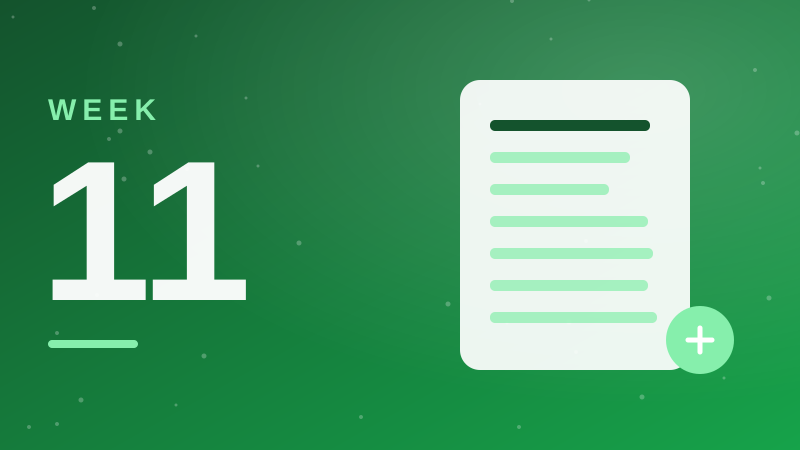
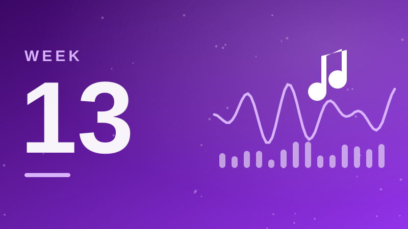

2026학년도 1학기 · 15주 강의교안
AI와 디지털 리터러시
AI의 원리부터 윤리·데이터·생성형 AI 실습까지, AI 시대를 살아가는 데 필요한 리터러시를 주차별로 학습함.
15주차
10이론
4실습
2평가
WEEK 01–15주차별 강의교안
01주차이론
AI와 디지털 리터러시 개요
AI의 정의와 현대 사회 필수 역량 이해
교안 보기 →
02주차이론
AI의 작동 원리
인공지능이 어떻게 사고하고 학습하는지 기초 원리 학습
교안 보기 →
03주차이론
디지털 리터러시의 핵심
디지털 정보를 비판적으로 수용하고 활용하는 능력
교안 보기 →04주차이론
AI의 활용 사례
산업 및 일상 속 실제 AI 도입 케이스 스터디
교안 보기 →
05주차이론
AI에 의한 혁신과 활용
AI가 가져오는 사회적 변화와 혁신적 사용법
교안 보기 →
06주차이론
AI와 윤리
편향성, 저작권, 책임 등 AI 사용 시 주의할 윤리적 쟁점
교안 보기 →
07주차이론
데이터와 정보
AI의 원재료인 데이터와 정보의 구조 이해
교안 보기 →
08주차평가
중간고사
1~7주차 학습 내용 평가 · 생각해볼 문제 모음 + 핵심 30선
교안 보기 →
09주차이론
데이터 분석
수집된 데이터를 해석하고 인사이트를 도출하는 과정
교안 보기 →
10주차이론
생성형 AI 분석
ChatGPT 등 생성형 모델의 구조와 특징 분석
교안 보기 →
11주차실습
생성형 AI 활용 1
텍스트 기반 콘텐츠 제작 및 업무 활용법
교안 보기 →
12주차실습
생성형 AI 실습: Text, 이미지
텍스트 생성 및 AI 이미지 제작 도구 숙달
교안 보기 →
13주차실습
생성형 AI 실습: 영상 + 음악
영상 편집 및 배경음악 생성 AI 활용 실습
교안 보기 →
14주차실습
생성형 AI 실습: 바이브코딩
코딩 지식 없이 AI를 활용한 프로그램 구현
교안 보기 →
15주차평가
기말고사
전체 과정 마무리 및 최종 평가
교안 보기 →교안 이용 안내
- 상단의 01~15 주차 번호를 누르면 어느 페이지에서든 해당 주차로 바로 이동함
- 각 주차 교안은 앞부분만 공개되며, 이후 내용은 수업 시간에 안내한 비밀번호로 잠금 해제함 (한 번 입력하면 브라우저를 닫기 전까지 모든 주차에 적용됨)
- 각 주차의 ❗ 생각해볼 문제는 정답·해설이 가려져 있으며, 셀을 누르면 확인 가능함
- 11~14주차 실습 교안의 프롬프트는 복사 버튼으로 바로 붙여넣기 가능함